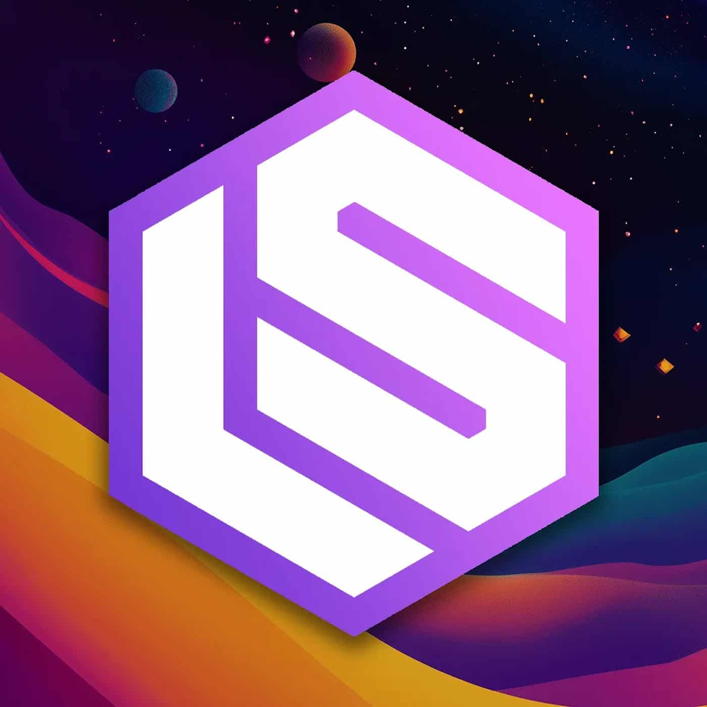

LSRailway betreut 3 Mio. Nutzer mit 35 Personen und gewinnt 100k Anmeldungen pro Woche auf eigener Bare-Metal-Hardware.
Die Amortisation eigener Rechenzentren gegenüber Cloud-Miete beträgt 3 Monate; 70 % Marge finanzieren Bursting, und die Hardware ist im Wert gestiegen – übersteigt mittlerweile die 124 Mio. Dollar Finanzierung.
Railway serves 3M users with a 35-person team, adding 100k signups/week on bare metal it owns.
Bare metal payback vs. cloud rent is just 3 months; 70% margins fund bursting, and hardware value now exceeds the $124M raised as RAM prices climbed.